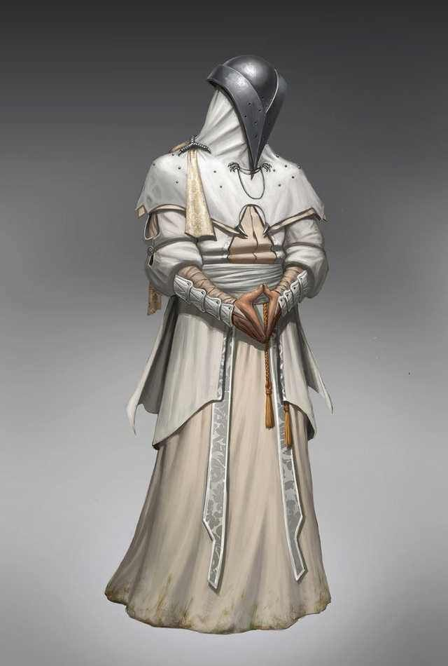

Santiago
The death of one thing is the prolonging of another. Santiago knows this all too well. At the end of the
eras, both death and life mix together in one harmonious symphony. In time, Santiago's vision will come to
pass, one way or another.
The leader of the Cult of Fives, Santiago is the chair of the Armas. The party has not met Santiago in person.